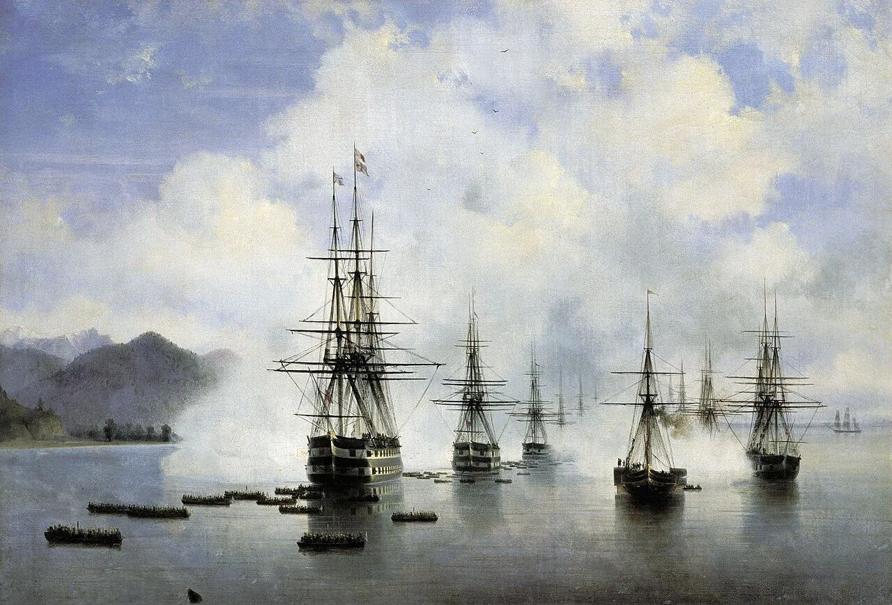
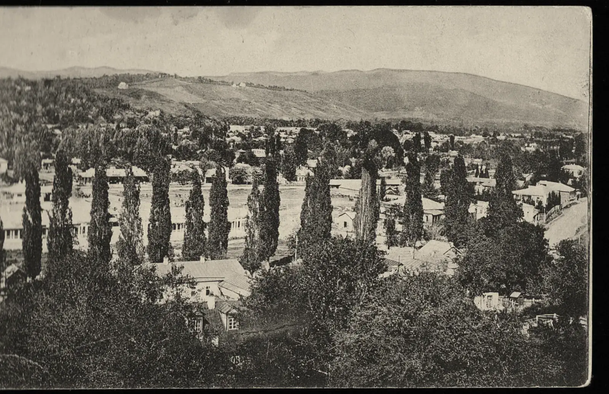
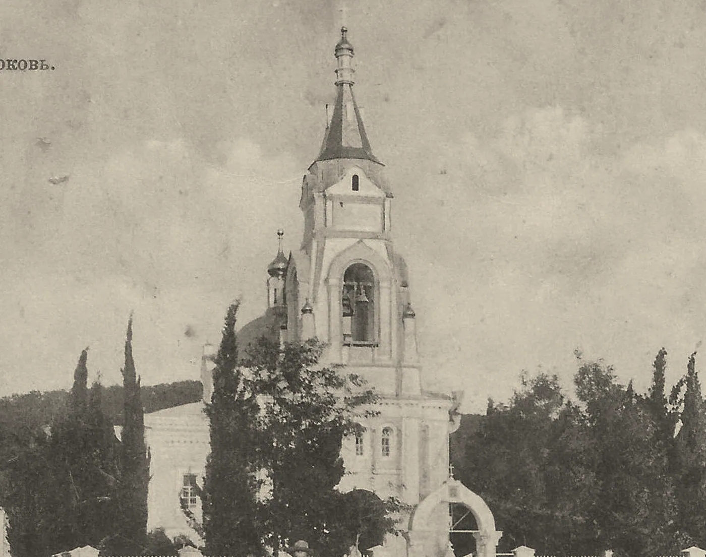
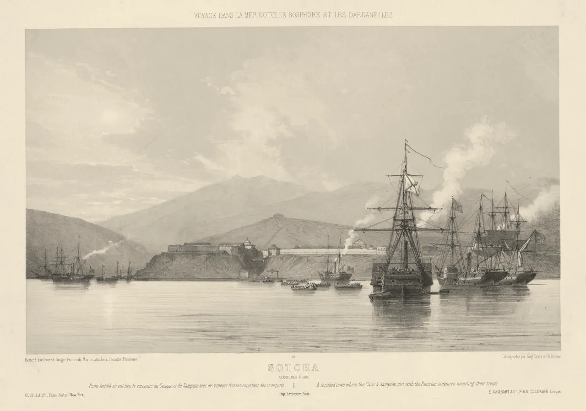
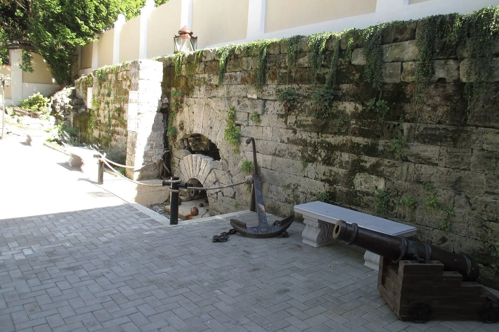

10 января 1837 года. Военный министр — главноуправляющему на Кавказе
«…предположено занять небольшими укреплениями все важнейшие по протяжению берега якорные места и учредить между ними непрерывное крейсерство на небольших гребных судах…»
Граф А. И. Чернышев — барону Г. В. Розену. Акты Кавказской археографической комиссии, т. VIII

Глава первая
1838
Навагинское укрепление
Город начался с крепости: её заложили 21 апреля 1838 года, через восемь дней после высадки.
Устье реки Сочи
Фон: И. Айвазовский, «Десант в Субаши», 1839 — такая же высадка на этом берегу годом позже. Общественное достояние

Собор Михаила Архангела. Он стоит на территории бывшего укрепления
Фото: Gray Gray, 2014, CC BY-SA 3.0


- Этот вид сняли с колокольни собора в 1900–1904 годахЛистайте: проём колокольни откроется, и панорама поедет от моря к долине
- Слева — море. Форт 1838 года жил только им: по суше он был отрезан от соседних укреплений
- Посад через 60 лет после форта. В 1900 году здесь жили 1 309 человек в 145 домахЭнциклопедический словарь Брокгауза и Ефрона, 1900
- Справа — долина реки Сочи. В 1864 году пост Даховский поставили не на месте форта, а здесь, в долине
- Вся панорама целиком: открытка «Сочи. Общий вид», 1900–1904Почтовая карточка, издатель не указан; Госкаталог РФ; PastVu № 883798
Что это
Первая русская крепость на месте Сочи
Навагинское укрепление — первое русское поселение на месте Сочи. Его построили как звено : цепи малых фортов вдоль восточного берега Чёрного моря.
От форта остался фрагмент стены в центре города. Рядом стоят собор Михаила Архангела, старейший храм Сочи, и маяк, зажжённый в 1891 году.
- Где
- устье реки Сочи; стена форта — во дворе на улице Москвина, 7, собор — в 250 м от неё
- Когда
- форт 1838–1854, собор 1874–1891, маяк 1891
- Кто
- отряд генерал-майора Андрея Симборского; с 1839 года форт носит имя 78-го Навагинского пехотного полка
- Сейчас
- стена — объект культурного наследия, собор действует, маяк работает
Как это появилось
От якорного места до посада
1829
По побережье от устья Кубани до пристани Святого Николая перешло от Османской империи к России. Удержать этот берег было трудно: через него шла торговля с Османской империей, а к скалистому берегу большим кораблям подойти непросто.
Январь 1837
Военный министр граф Чернышев изложил план: занять небольшими укреплениями все удобные и связать их непрерывным крейсерством малых судов. По такому плану строили Черноморскую береговую линию.
1837
Заложили форт Святого Духа, будущий Адлер. Следующим шагом должно было стать устье реки Сочи, но в отряде начались болезни: в сентябре слегли 1 800 человек из 4 200. Десант перенесли на весну.
13 апреля 1838
Отряд генерал-майора Андрея Симборского, около трёх с половиной тысяч человек, высадил . Здесь стояло селение Сочипсы; по данным «Википедии», в нём жили около 450 семей убыхов, абазин и турок. Бой длился около трёх часов, русский отряд потерял около 170 человек убитыми и ранеными. Потери горцев известны плохо: в рапорте упомянуты лишь 21 тело, оставленное на месте боя.
21 апреля 1838
После молебна Симборский заложил форт и в рапорте просил назвать его «Александрия» в честь императрицы Александры Фёдоровны. 18 мая 1839 года форт переименовали в Навагинский — в честь 78-го Навагинского пехотного полка.
1838–1854
Форт занимал примерно 256 × 160 метров. У реки стояла трёхъярусная каменная башня, остальные стены были из кольев, хвороста, земли и брёвен. По подсчётам историка А. А. Черкасова, за 16 лет жизни форта не менее двух тысяч солдат и офицеров погибли от болезней и в боях.
1854
В разгар Крымской войны гарнизон ушёл, а форт разрушили: береговую линию демонтировали.
1864–1896
После окончания построили пост Даховский — не на месте форта, а в долине реки Сочи. В 1874 году он стал , а с 1896 года называется Сочи.
1874–1891
26 мая 1874 года на территории бывшего форта заложили храм в память окончания войны. Собор освятили 24 сентября 1891 года, а маяк рядом ввели в строй 15 ноября 1891 года. В 1900 году энциклопедия Брокгауза и Ефрона описывала посад так: 1 309 жителей, 145 домов, одна православная церковь, больница на 8 кроватей.


Сравните
Тот же собор через сто лет
После войны здание перестраивали, а в 1992–1994 годах реставраторы вернули ему первоначальный облик. Нажмите на снимок и держите: появится другой год.
Кадры совмещены по шпилю и проёму колокольни; открытку снимали левее, поэтому низ здания не совпадает. Открытка «Сочи. Церковь», издание И. А. Кореневича, PastVu № 1453781. Фото 2014: Ivanaivanova, 2014, CC BY-SA 3.0
1837
«…учрежденное из судов крейсерство оказалось недостаточным.»
Военный министр А. И. Чернышев — барону Г. В. Розену, 10 января 1837 года. АКАК, т. VIII
Галерея
Посад у бывшего форта
На что посмотреть на месте
Что осталось от 1838 года
Кусок крепостной стены во дворе на улице Москвина, 7
Единственное, что осталось от форта, — фрагмент его северной стены. Она стоит во дворе бывшего дома купца Политиди, где в советское время была поликлиника. Стена — объект культурного наследия регионального значения; в 2016 году в доме открыли арт-галерею «Форт».
Эллинский спуск
Широкая лестница от ворот форта к более пологой части посада. Название сохранилось в топонимике города как напоминание о событиях тех лет.
Колокольня и шпиль собора
Храм в плане — четырёхконечный крест с вытянутой передней ветвью и куполом в центре. Длина здания 25,6 м, ширина 17,1 м, высота вместе с крестом на колокольне 34 м. После войны здание перестраивали, а в 1992–1994 годах реставраторы вернули ему первоначальный облик: на открытке 1910 года и на современном снимке колокольня выглядит одинаково.
Маяк и дом смотрителя
Башня высотой 15 метров и одноэтажный жилой дом построены в 1890–1891 годах из керченского камня. Маяк стоит позади земляных укреплений форта и действует до сих пор; комплекс принадлежит Министерству обороны.

Источник: подпись под литографией, 1854
«Sotcha. Point fortifié où eut lieu la rencontre du Cacique et du Sampson avec les vapeurs Russes escortant des transports»
Перевод: «Сотча. Укреплённый пункт, где произошла встреча „Касика“ и „Сампсона“ с русскими пароходами, которые сопровождали транспорты».
Жан-Батист Дюран-Брагер (1854); Национальная галерея Виктории (NGV), через Wikimedia Commons, общественное достояние
- Кто рисовал
- Художник французской эскадры: в Крымскую войну Франция воевала против России.
- Что видно
- 1854 год: русские оставляют форт, у берега пароходы и транспорты. Название записано на слух — «Sotcha».
- Что проверить
- Имена судов взяты из подписи; подробности эпизода по другим источникам мы не проверяли.
Ещё один документПисьмо военного министра, 1837
Источник: письмо военного министра, 10 января 1837 года
«К пресечению сей вредной торговли, препятствующей всем предприятиям Российских промышленников и поддерживающей в горцах дух своеволия, неповиновения и хищничество, учрежденное из судов крейсерство оказалось недостаточным. […] Для достижения этой важной цели, предположено занять небольшими укреплениями все важнейшие по протяжению берега якорные места и учредить между ними непрерывное крейсерство на небольших гребных судах, способных к береговому плаванию…»
- Кто пишет
- Военный министр граф А. И. Чернышев — главноуправляющему на Кавказе барону Г. В. Розену.
- Зачем
- Объяснить план: занять фортами удобные для кораблей места и так перекрыть морскую торговлю горцев, которую министр называет вредной.
- Чего здесь нет
- Голоса горских обществ. Это взгляд одной стороны; как они видели те же события, документ не говорит.
Значение для Сочи
Точка отсчёта: из форта вырос посад, а из посада — город. Здесь стоят остатки первой крепости, старейший храм города и маяк.
Значение для России
Россия закрепляла за собой восточное побережье Чёрного моря цепью укреплений: сначала крепость, потом посёлок, потом город. Черноморская береговая линия — пример такого пути.
Раздел курса: 2. Российское государство-цивилизация
Ценность: суверенитет

Факт, который мало кто знает
Камень для крепости в 1838 году везли морем из Керчи: по суше форт был отрезан. Через 52 года стройматериал для сочинского маяка тоже привезли из керченских каменоломен.
Фрагмент стены форта с проёмом ворот. Фото: Gray Gray, 2016, CC BY-SA 4.0
Что вы узнали
Три вещи о первом форте
Город начался с крепости
Сочи начался как военный проект государства: форт в устье реки заложили 21 апреля 1838 года как звено Черноморской береговой линии.
Форт держался морем
Форт жил только за счёт моря, его гарнизон страдал от болезней и боёв; в 1854 году его разрушили, а город вырос рядом после 1864 года.
Что осталось
Собор (заложен в 1874-м, освящён в 1891-м) и маяк построены на месте форта; от самой крепости остались кусок стены и Эллинский спуск.
Проверьте себя Зачем государству были форты именно на «якорных местах»?
Кораблю можно пристать не везде. Заняв удобные стоянки фортами, государство держало берег и перекрывало морскую торговлю горцев с Османской империей: так объяснял план военный министр в 1837 году.
Источники главы 9 публикаций: архивные акты, энциклопедия 1900 года, статьи историков
- Форт Александрия (21 апреля 1838 г.) — К. В. Таран, РВИО, Сочинское отделение, 2023
- Навагинский форт — Википедия
- Черноморская береговая линия — Википедия
- Адрианопольский мирный договор (1829) — Википедия
- Собор Михаила Архангела (Сочи) — Википедия
- Сочинский маяк — Википедия
- Сочинский маяк — Русское географическое общество
- Сочи — Википедия, раздел «История»
- Сочи (Даховский посад) — ЭСБЕ, т. XXXI (1900), Викитека